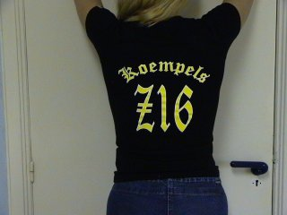
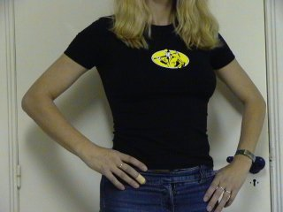
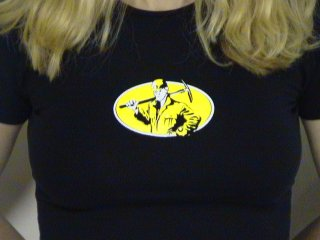

|
Koempels Z16 hebben eigen kleding |

Een aantal supporters uit vak Z16 heeft een
zeer gelimiteerde oplage laten drukken van het
KOEMPELS Z16 shirt/sweater/girlie/polo.
Het ontwerp werd gemaakt door Marco Smeets.
De achterkant toont in Old English lettertype in Old English lettertype de
tekst Koempels Z16.

Op de voorzijde prijkt de koempel met zijn pik-
houweel welke ook in het logo van deze site is
terug te vinden.

Dit niet-commerciële project is een initiatief van
supporters uit Z16 welke ook de grote
Z16 KOEMPELS Z16-vaan hebben gefinancierd.